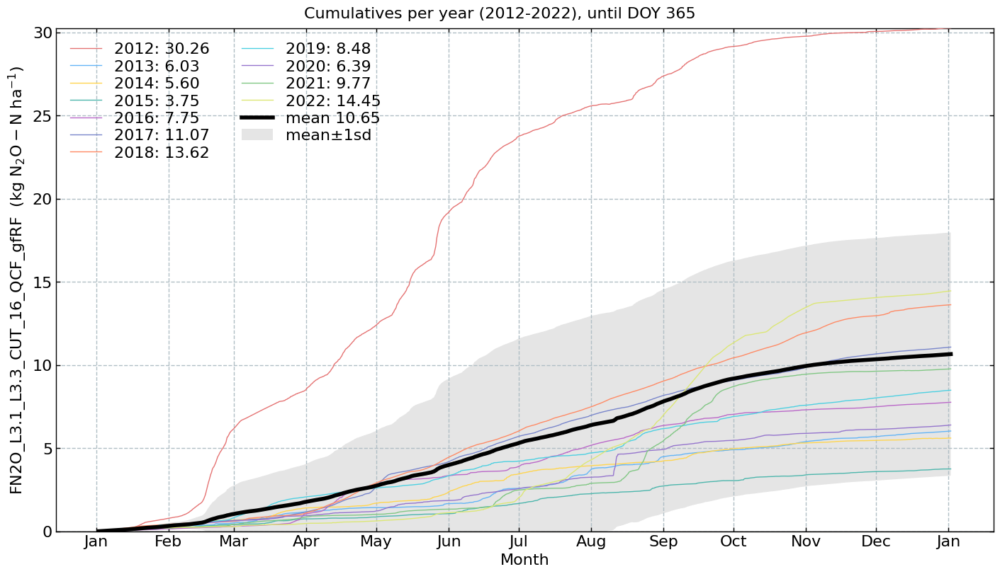
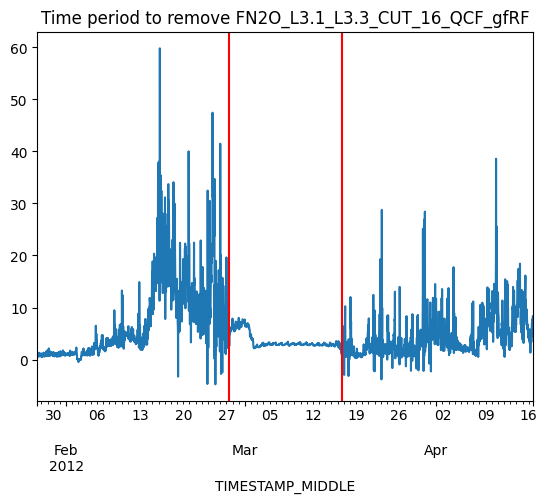
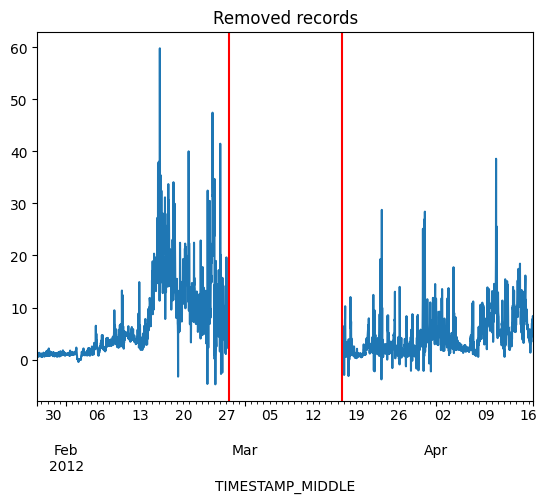
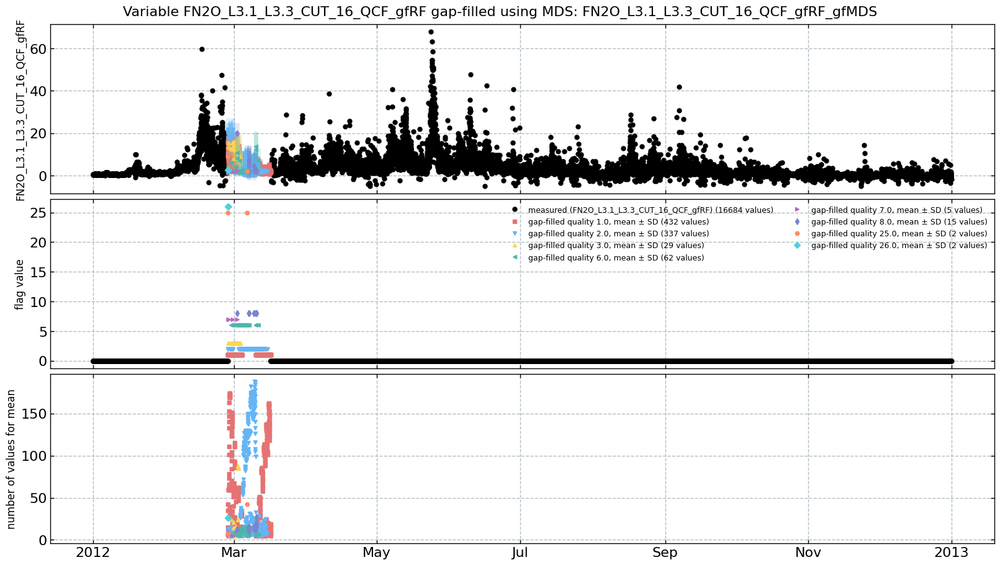
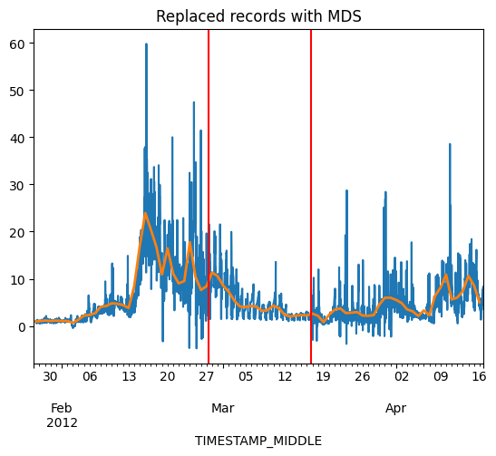
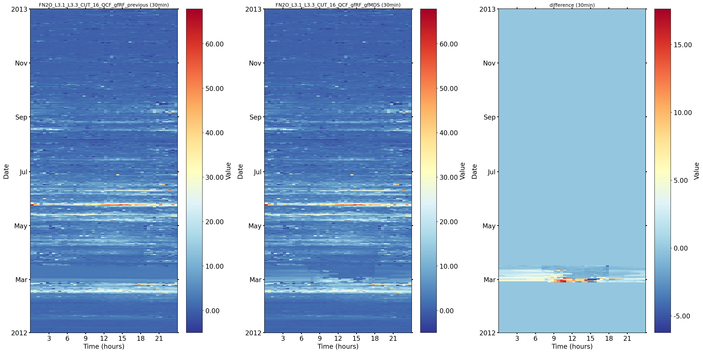
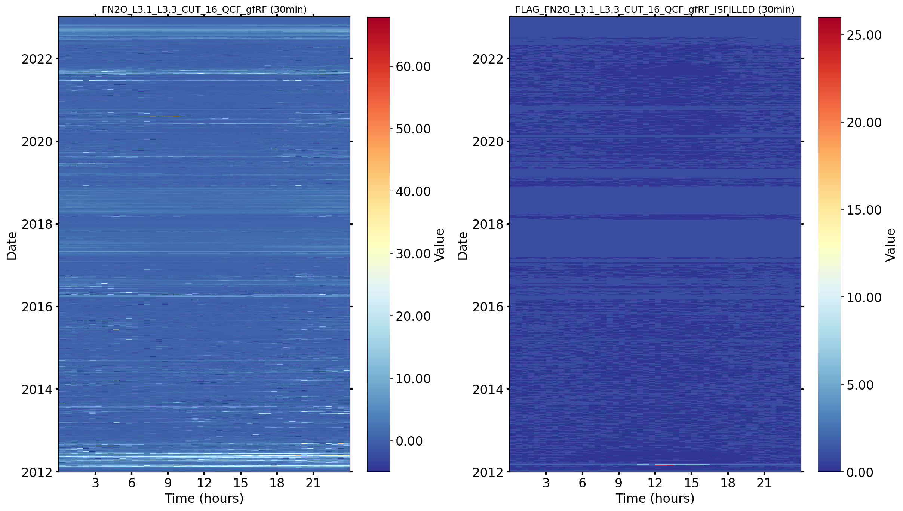
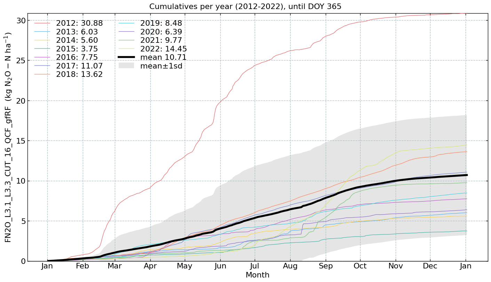

Separate gap-filling for 2+ weeks in 2012#
Author: Lukas Hörtnagl (holukas@ethz.ch)
Tricky gap in 2012
Random forest models were not able to predict fluxes satisfactorily between 27 Feb 2012 8:00 and 16 Mar 2012 18:00
Here MDS is used to fill this short time period
First, the time period is removed from the gap-filled fluxes that were previously gap-filled with random forest
Next, MDS is used to gap-fill the time period, using SW_IN, TS and SWC as predictors
This produced a more realistic flux pattern during this period
Settings#
FLUX = "FN2O"
USTAR = "16"
gain = 0.00050424109632 # Conversion factor to convert nmol N2O m-2 s-1 to kg N2O-N ha-1
units = r'($\mathrm{kg\ N_2O-N\ ha^{-1}}$)' # Units for N2O flux, used in cumulative plots only
Imports#
import importlib.metadata
import datetime as dt
from datetime import datetime
import pandas as pd
import numpy as np
import matplotlib.pyplot as plt
from pathlib import Path
from diive.core.io.files import save_parquet, load_parquet
from diive.core.plotting.timeseries import TimeSeries # For simple (interactive) time series plotting
from diive.core.dfun.stats import sstats # Time series stats
from diive.core.plotting.heatmap_datetime import HeatmapDateTime
from diive.pkgs.gapfilling.mds import FluxMDS
from diive.core.plotting.cumulative import CumulativeYear
import warnings
warnings.filterwarnings('ignore')
version_diive = importlib.metadata.version("diive")
print(f"diive version: v{version_diive}")
diive version: v0.87.0
Define variables#
# Target variable
target = f"{FLUX}_L3.1_L3.3_CUT_{USTAR}_QCF_gfRF"
flag = f"FLAG_{target}_ISFILLED"
print(target, flag)
FN2O_L3.1_L3.3_CUT_16_QCF_gfRF FLAG_FN2O_L3.1_L3.3_CUT_16_QCF_gfRF_ISFILLED
# Predictors, only meteo vars for MDS
METEO_VARS = ["TS_GF1_0.04_1_gfXG", "SWC_GF1_0.15_1_gfXG", "SW_IN_T1_2_1"]
print(METEO_VARS)
['TS_GF1_0.04_1_gfXG', 'SWC_GF1_0.15_1_gfXG', 'SW_IN_T1_2_1']
Load main data (contains predictors)#
SOURCEDIR = r"../30_MERGE_DATA"
FILENAME = r"33.5_CH-CHA_IRGA+QCL+LGR+M10+MGMT_Level-1_eddypro_fluxnet_2005-2024.parquet"
FILEPATH = Path(SOURCEDIR) / FILENAME
print(f"Data will be loaded from the following file:\n{FILEPATH}")
MAIN_df = load_parquet(filepath=FILEPATH)
_locs = (MAIN_df.index.year >= 2012) & (MAIN_df.index.year <= 2012)
MAIN_df = MAIN_df[_locs].copy()
PREDICTORS_df = MAIN_df[METEO_VARS].copy()
PREDICTORS_df
Data will be loaded from the following file:
..\30_MERGE_DATA\33.5_CH-CHA_IRGA+QCL+LGR+M10+MGMT_Level-1_eddypro_fluxnet_2005-2024.parquet
Loaded .parquet file ..\30_MERGE_DATA\33.5_CH-CHA_IRGA+QCL+LGR+M10+MGMT_Level-1_eddypro_fluxnet_2005-2024.parquet (0.661 seconds).
--> Detected time resolution of <30 * Minutes> / 30min
| TS_GF1_0.04_1_gfXG | SWC_GF1_0.15_1_gfXG | SW_IN_T1_2_1 | |
|---|---|---|---|
| TIMESTAMP_MIDDLE | |||
| 2012-01-01 00:15:00 | 4.4616 | 47.828381 | 0.0 |
| 2012-01-01 00:45:00 | 4.4662 | 47.830925 | 0.0 |
| 2012-01-01 01:15:00 | 4.4702 | 47.838543 | 0.0 |
| 2012-01-01 01:45:00 | 4.5145 | 47.841091 | 0.0 |
| 2012-01-01 02:15:00 | 4.5171 | 47.848713 | 0.0 |
| ... | ... | ... | ... |
| 2012-12-31 21:45:00 | 3.7552 | 47.014778 | 0.0 |
| 2012-12-31 22:15:00 | 3.7072 | 47.015614 | 0.0 |
| 2012-12-31 22:45:00 | 3.6226 | 47.022266 | 0.0 |
| 2012-12-31 23:15:00 | 3.5427 | 47.020596 | 0.0 |
| 2012-12-31 23:45:00 | 3.4732 | 47.023918 | 0.0 |
17568 rows × 3 columns
Load (previously corrected) gap-filled fluxes 2012#
Contains gap-filled flux and flag
SOURCEDIR = r""
FILENAME = r"51.8b_CorrectionGapFilling_L4.1_FN2O_CUT_165084.parquet"
FILEPATH = Path(SOURCEDIR) / FILENAME
FLUX_df = load_parquet(filepath=FILEPATH)
FLUX_ALL_df = FLUX_df.copy() # All years
_locs = (FLUX_df.index.year >= 2012) & (FLUX_df.index.year <= 2012)
FLUX_df = FLUX_df[_locs].copy()
FLUX_df
Loaded .parquet file 51.8b_CorrectionGapFilling_L4.1_FN2O_CUT_165084.parquet (0.047 seconds).
--> Detected time resolution of <30 * Minutes> / 30min
| FN2O | USTAR | SW_IN_POT | DAYTIME | NIGHTTIME | FLAG_L2_FN2O_MISSING_TEST | FLAG_L2_FN2O_SSITC_TEST | FLAG_L2_FN2O_COMPLETENESS_TEST | FLAG_L2_FN2O_SCF_TEST | FLAG_L2_FN2O_N2O_VM97_SPIKE_HF_TEST | FLAG_L2_FN2O_N2O_VM97_AMPLITUDE_RESOLUTION_HF_TEST | FLAG_L2_FN2O_N2O_VM97_DROPOUT_TEST | FLAG_L2_FN2O_VM97_AOA_HF_TEST | SUM_L2_FN2O_HARDFLAGS | SUM_L2_FN2O_SOFTFLAGS | ... | FN2O_L3.1_L3.3_CUT_50_QCF | FN2O_L3.1_L3.3_CUT_50_QCF0 | FLAG_L3.3_CUT_84_FN2O_L3.1_USTAR_TEST | SUM_L3.3_CUT_84_FN2O_L3.1_HARDFLAGS | SUM_L3.3_CUT_84_FN2O_L3.1_SOFTFLAGS | SUM_L3.3_CUT_84_FN2O_L3.1_FLAGS | FLAG_L3.3_CUT_84_FN2O_L3.1_QCF | FN2O_L3.1_L3.3_CUT_84_QCF | FN2O_L3.1_L3.3_CUT_84_QCF0 | FN2O_L3.1_L3.3_CUT_16_QCF_gfRF | FLAG_FN2O_L3.1_L3.3_CUT_16_QCF_gfRF_ISFILLED | FN2O_L3.1_L3.3_CUT_50_QCF_gfRF | FLAG_FN2O_L3.1_L3.3_CUT_50_QCF_gfRF_ISFILLED | FN2O_L3.1_L3.3_CUT_84_QCF_gfRF | FLAG_FN2O_L3.1_L3.3_CUT_84_QCF_gfRF_ISFILLED | |
|---|---|---|---|---|---|---|---|---|---|---|---|---|---|---|---|---|---|---|---|---|---|---|---|---|---|---|---|---|---|---|---|
| TIMESTAMP_MIDDLE | |||||||||||||||||||||||||||||||
| 2012-01-01 00:15:00 | NaN | 0.191226 | 0.0 | 0.0 | 1.0 | 2.0 | NaN | NaN | NaN | NaN | NaN | NaN | NaN | 2.0 | 0.0 | ... | NaN | NaN | 0.0 | 2.0 | 0.0 | 2.0 | 2.0 | NaN | NaN | 0.615439 | 1.0 | 1.692910 | 1.0 | 1.303387 | 1.0 |
| 2012-01-01 00:45:00 | NaN | 0.056639 | 0.0 | 0.0 | 1.0 | 2.0 | NaN | NaN | NaN | NaN | NaN | NaN | NaN | 2.0 | 0.0 | ... | NaN | NaN | 2.0 | 4.0 | 0.0 | 4.0 | 2.0 | NaN | NaN | 0.357831 | 1.0 | 0.479658 | 1.0 | 0.340526 | 1.0 |
| 2012-01-01 01:15:00 | NaN | 0.105926 | 0.0 | 0.0 | 1.0 | 2.0 | NaN | NaN | NaN | NaN | NaN | NaN | NaN | 2.0 | 0.0 | ... | NaN | NaN | 0.0 | 2.0 | 0.0 | 2.0 | 2.0 | NaN | NaN | 0.299795 | 1.0 | 0.349175 | 1.0 | 0.300821 | 1.0 |
| 2012-01-01 01:45:00 | NaN | 0.061007 | 0.0 | 0.0 | 1.0 | 2.0 | NaN | NaN | NaN | NaN | NaN | NaN | NaN | 2.0 | 0.0 | ... | NaN | NaN | 2.0 | 4.0 | 0.0 | 4.0 | 2.0 | NaN | NaN | 0.547467 | 1.0 | 1.663710 | 1.0 | 1.312394 | 1.0 |
| 2012-01-01 02:15:00 | NaN | 0.079177 | 0.0 | 0.0 | 1.0 | 2.0 | NaN | NaN | NaN | NaN | NaN | NaN | NaN | 2.0 | 0.0 | ... | NaN | NaN | 2.0 | 4.0 | 0.0 | 4.0 | 2.0 | NaN | NaN | 0.560168 | 1.0 | 1.668482 | 1.0 | 1.311202 | 1.0 |
| ... | ... | ... | ... | ... | ... | ... | ... | ... | ... | ... | ... | ... | ... | ... | ... | ... | ... | ... | ... | ... | ... | ... | ... | ... | ... | ... | ... | ... | ... | ... | ... |
| 2012-12-31 21:45:00 | -0.126775 | 0.064993 | 0.0 | 0.0 | 1.0 | 0.0 | 2.0 | 0.0 | 0.0 | 0.0 | 0.0 | 0.0 | NaN | 2.0 | 0.0 | ... | NaN | NaN | 2.0 | 4.0 | 0.0 | 4.0 | 2.0 | NaN | NaN | -0.700139 | 1.0 | 0.082655 | 1.0 | 0.548848 | 1.0 |
| 2012-12-31 22:15:00 | 0.613063 | 0.059460 | 0.0 | 0.0 | 1.0 | 0.0 | 2.0 | 0.0 | 0.0 | 0.0 | 0.0 | 0.0 | NaN | 2.0 | 0.0 | ... | NaN | NaN | 2.0 | 4.0 | 0.0 | 4.0 | 2.0 | NaN | NaN | -0.759284 | 1.0 | 0.152729 | 1.0 | 0.528988 | 1.0 |
| 2012-12-31 22:45:00 | 1.218430 | 0.058793 | 0.0 | 0.0 | 1.0 | 0.0 | 1.0 | 0.0 | 0.0 | 0.0 | 0.0 | 0.0 | NaN | 0.0 | 1.0 | ... | NaN | NaN | 2.0 | 2.0 | 1.0 | 3.0 | 2.0 | NaN | NaN | 1.235427 | 0.0 | 0.165352 | 1.0 | 0.560642 | 1.0 |
| 2012-12-31 23:15:00 | -0.161192 | 0.049726 | 0.0 | 0.0 | 1.0 | 0.0 | 1.0 | 0.0 | 0.0 | 0.0 | 0.0 | 0.0 | NaN | 0.0 | 1.0 | ... | NaN | NaN | 2.0 | 2.0 | 1.0 | 3.0 | 2.0 | NaN | NaN | -1.013118 | 1.0 | 0.301967 | 1.0 | 0.605785 | 1.0 |
| 2012-12-31 23:45:00 | -1.933690 | 0.080351 | 0.0 | 0.0 | 1.0 | 0.0 | 1.0 | 0.0 | 0.0 | 0.0 | 0.0 | 0.0 | NaN | 0.0 | 1.0 | ... | -1.835671 | NaN | 2.0 | 2.0 | 1.0 | 3.0 | 2.0 | NaN | NaN | -1.835671 | 0.0 | -1.835671 | 0.0 | 0.530624 | 1.0 |
17568 rows × 61 columns
Cumulative: before#
s = FLUX_ALL_df[target].copy()
s = s.multiply(gain)
CumulativeYear(
series=s,
series_units=units,
yearly_end_date=None,
# yearly_end_date='08-11',
start_year=2012,
end_year=2022,
show_reference=True,
excl_years_from_reference=None,
highlight_year=None,
highlight_year_color='#F44336').plot()

Merge measured flux (gap-filled) with predictors#
subset = pd.concat([FLUX_df[target], PREDICTORS_df], axis=1)
subset
| FN2O_L3.1_L3.3_CUT_16_QCF_gfRF | TS_GF1_0.04_1_gfXG | SWC_GF1_0.15_1_gfXG | SW_IN_T1_2_1 | |
|---|---|---|---|---|
| TIMESTAMP_MIDDLE | ||||
| 2012-01-01 00:15:00 | 0.615439 | 4.4616 | 47.828381 | 0.0 |
| 2012-01-01 00:45:00 | 0.357831 | 4.4662 | 47.830925 | 0.0 |
| 2012-01-01 01:15:00 | 0.299795 | 4.4702 | 47.838543 | 0.0 |
| 2012-01-01 01:45:00 | 0.547467 | 4.5145 | 47.841091 | 0.0 |
| 2012-01-01 02:15:00 | 0.560168 | 4.5171 | 47.848713 | 0.0 |
| ... | ... | ... | ... | ... |
| 2012-12-31 21:45:00 | -0.700139 | 3.7552 | 47.014778 | 0.0 |
| 2012-12-31 22:15:00 | -0.759284 | 3.7072 | 47.015614 | 0.0 |
| 2012-12-31 22:45:00 | 1.235427 | 3.6226 | 47.022266 | 0.0 |
| 2012-12-31 23:15:00 | -1.013118 | 3.5427 | 47.020596 | 0.0 |
| 2012-12-31 23:45:00 | -1.835671 | 3.4732 | 47.023918 | 0.0 |
17568 rows × 4 columns
Identify exact start and end of problematic time period#
I checked the eddy covariance raw data plots (20Hz):
2012022702.b00is the last complete raw data file before the gap, N2O and CH4 look good2012022708.b00is the last complete raw data file before the gap, but N2O and CH4 measurements by the QCL are already faulty2012022714.b00is the first incomplete raw data file already during the gap (N2O and CH4 completely missing)2012031602.b00is the last incomplete raw data file already during the gap (N2O and CH4 completely missing)2012031614.b00is the first complete raw data file after the gap, N2O and CH4 look good again after approx. 18:00h2012031620.b00is the first complete raw data file after the gap, N2O and CH4 look good again
# Removal dates
remove_from = datetime(2012, 2, 27, 8, 0)
remove_until = datetime(2012, 3, 16, 18, 0)
# For SUBSET
replacelocs = (subset.index >= remove_from) & (subset.index <= remove_until)
show_locs = (subset.index >= datetime(2012, 1, 27, 8, 0)) & (subset.index <= datetime(2012, 4, 16, 18, 0)) # For plotting
# For full dataframe with all years
replacelocs_all = (FLUX_ALL_df.index >= remove_from) & (FLUX_ALL_df.index <= remove_until)
ax = subset[target].loc[show_locs].plot(title=f"Time period to remove {target}")
plt.axvline(remove_from, color="red")
plt.axvline(remove_until, color="red");

Remove fluxes on dates#
subset[target].loc[replacelocs] = np.nan
ax = subset[target].loc[show_locs].plot(title="Removed records")
plt.axvline(remove_from, color="red")
plt.axvline(remove_until, color="red");

Gap-filling#
Init#
settings = dict()
mds = FluxMDS(
df=subset,
flux=target,
ta='TS_GF1_0.04_1_gfXG',
swin='SW_IN_T1_2_1',
vpd='SWC_GF1_0.15_1_gfXG',
swin_tol=[20, 50],
ta_tol=2.5,
vpd_tol=2.5,
avg_min_n_vals=5
)
Run#
mds.run()
==============================
Starting MDS gap-filling of flux FN2O_L3.1_L3.3_CUT_16_QCF_gfRF.
MDS gap-filling quality 1 using SW_IN, TA, VPD in 7 days window ...
MDS gap-filling quality 2 using SW_IN, TA, VPD in 14 days window ...
MDS gap-filling quality 3 using SW_IN in 7 days window ...
MDS gap-filling quality 4 using mean diurnal cycle of flux in 0 days, 1 hours window ...
MDS gap-filling quality 5 using mean diurnal cycle of flux in 1 days, 1 hours window ...
MDS gap-filling quality 6 using SW_IN, TA, VPD in 21 days window ...
MDS gap-filling quality 7 using SW_IN, TA, VPD in 28 days window ...
MDS gap-filling quality 8 using SW_IN in 14 days window ...
MDS gap-filling quality 9 using SW_IN, TA, VPD in 35 days window ...
MDS gap-filling quality 10 using SW_IN, TA, VPD in 42 days window ...
MDS gap-filling quality 11 using SW_IN, TA, VPD in 49 days window ...
MDS gap-filling quality 12 using SW_IN, TA, VPD in 56 days window ...
MDS gap-filling quality 13 using SW_IN, TA, VPD in 63 days window ...
MDS gap-filling quality 14 using SW_IN, TA, VPD in 70 days window ...
MDS gap-filling quality 15 using SW_IN, TA, VPD in 77 days window ...
MDS gap-filling quality 16 using SW_IN, TA, VPD in 84 days window ...
MDS gap-filling quality 17 using SW_IN, TA, VPD in 91 days window ...
MDS gap-filling quality 18 using SW_IN, TA, VPD in 98 days window ...
MDS gap-filling quality 19 using SW_IN, TA, VPD in 105 days window ...
MDS gap-filling quality 20 using SW_IN, TA, VPD in 112 days window ...
MDS gap-filling quality 21 using SW_IN, TA, VPD in 119 days window ...
MDS gap-filling quality 22 using SW_IN, TA, VPD in 126 days window ...
MDS gap-filling quality 23 using SW_IN, TA, VPD in 133 days window ...
MDS gap-filling quality 24 using SW_IN, TA, VPD in 140 days window ...
MDS gap-filling quality 25 using SW_IN in 21 days window ...
MDS gap-filling quality 26 using SW_IN in 28 days window ...
MDS gap-filling done.
Report#
mds.report()
mds.showplot()
FN2O_L3.1_L3.3_CUT_16_QCF_gfRF before gap-filling:
17568 potential values
16684 available values
884 missing values
FN2O_L3.1_L3.3_CUT_16_QCF_gfRF after gap-filling (FN2O_L3.1_L3.3_CUT_16_QCF_gfRF_gfMDS):
17568 potential values
17568 available values
0 missing values
1.061 predictions mean quality across all records (1=best)
Gap-filling quality flags (FLAG_FN2O_L3.1_L3.3_CUT_16_QCF_gfRF_gfMDS_ISFILLED):
Directly measured: 16684 values (flag=0)
Gap-filling quality 1.0: 432 values (flag=1.0)
Gap-filling quality 2.0: 337 values (flag=2.0)
Gap-filling quality 3.0: 29 values (flag=3.0)
Gap-filling quality 6.0: 62 values (flag=6.0)
Gap-filling quality 7.0: 5 values (flag=7.0)
Gap-filling quality 8.0: 15 values (flag=8.0)
Gap-filling quality 25.0: 2 values (flag=25.0)
Gap-filling quality 26.0: 2 values (flag=26.0)
MDS gap-filling scores:
mae: 1.822
medae: 0.839
mse: 12.146
rmse: 3.485
mape: 5.735
maxe: 48.864
r2: 0.537
mean_quality_flag_gap_predictions: 2.061

Results#
var_new_gapfilled = mds.get_gapfilled_target().name
var_new_flag = mds.get_flag().name
new_gapfilling_df = mds.gapfilling_df_
ax = new_gapfilling_df[var_new_gapfilled].loc[show_locs].plot(title="Replaced records with MDS")
ax = new_gapfilling_df[var_new_gapfilled].loc[show_locs].resample('D').mean().plot(title="Replaced records with MDS", lw=2)
plt.axvline(remove_from, color="red")
plt.axvline(remove_until, color="red");

# Store previously gap-filled flux For comparison
flux_gapfilled_orig = FLUX_df[target].copy()
flux_gapfilled_orig.name = f"{target}_previous"
diff = new_gapfilling_df[var_new_gapfilled].sub(flux_gapfilled_orig)
diff.name = "difference"
fig, axs = plt.subplots(ncols=3, figsize=(24, 12), dpi=150, layout="constrained")
HeatmapDateTime(series=flux_gapfilled_orig, ax=axs[0]).plot() # Gap-filled flux from previous gap-filling
HeatmapDateTime(series=new_gapfilling_df[var_new_gapfilled], ax=axs[1]).plot() # New gap-filling
HeatmapDateTime(series=diff, ax=axs[2]).plot() # Difference between previous gap-filling and new gap-filling, to check if it worked for the three years

Add 2+ weeks back to main data#
FLUX_ALL_df.loc[replacelocs_all, target]
TIMESTAMP_MIDDLE
2012-02-27 08:15:00 4.693065
2012-02-27 08:45:00 4.507272
2012-02-27 09:15:00 4.094020
2012-02-27 09:45:00 5.300813
2012-02-27 10:15:00 6.157565
...
2012-03-16 15:45:00 1.285254
2012-03-16 16:15:00 0.982911
2012-03-16 16:45:00 1.570397
2012-03-16 17:15:00 1.315019
2012-03-16 17:45:00 5.798743
Freq: 30min, Name: FN2O_L3.1_L3.3_CUT_16_QCF_gfRF, Length: 884, dtype: float64
Remove records from previous gap-filling#
FLUX_ALL_df.loc[replacelocs_all, target] = np.nan
FLUX_ALL_df.loc[replacelocs_all, flag] = np.nan
FLUX_ALL_df.loc[replacelocs_all, target]
TIMESTAMP_MIDDLE
2012-02-27 08:15:00 NaN
2012-02-27 08:45:00 NaN
2012-02-27 09:15:00 NaN
2012-02-27 09:45:00 NaN
2012-02-27 10:15:00 NaN
..
2012-03-16 15:45:00 NaN
2012-03-16 16:15:00 NaN
2012-03-16 16:45:00 NaN
2012-03-16 17:15:00 NaN
2012-03-16 17:45:00 NaN
Freq: 30min, Name: FN2O_L3.1_L3.3_CUT_16_QCF_gfRF, Length: 884, dtype: float64
Fill new gap-filling into gaps#
FLUX_ALL_df.loc[replacelocs_all, target] = new_gapfilling_df.loc[replacelocs, var_new_gapfilled]
FLUX_ALL_df.loc[replacelocs_all, flag] = new_gapfilling_df.loc[replacelocs, var_new_flag]
FLUX_ALL_df.loc[replacelocs_all, target]
TIMESTAMP_MIDDLE
2012-02-27 08:15:00 10.416363
2012-02-27 08:45:00 12.917370
2012-02-27 09:15:00 15.620317
2012-02-27 09:45:00 17.629861
2012-02-27 10:15:00 21.609609
...
2012-03-16 15:45:00 1.697553
2012-03-16 16:15:00 1.863614
2012-03-16 16:45:00 2.206282
2012-03-16 17:15:00 1.708227
2012-03-16 17:45:00 1.283737
Freq: 30min, Name: FN2O_L3.1_L3.3_CUT_16_QCF_gfRF, Length: 884, dtype: float64
Plot heatmaps#
fig, axs = plt.subplots(ncols=2, figsize=(16, 9), dpi=150, layout="constrained")
HeatmapDateTime(series=FLUX_ALL_df[target], ax=axs[0]).plot() # New gap-filling in the three years
HeatmapDateTime(series=FLUX_ALL_df[flag], ax=axs[1]).plot() # Different scaling! Shows where OLD was replaced with NEW

Cumulatives: after#
s = FLUX_ALL_df[target].copy()
s = s.multiply(gain)
CumulativeYear(
series=s,
series_units=units,
yearly_end_date=None,
# yearly_end_date='08-11',
start_year=2012,
end_year=2022,
show_reference=True,
excl_years_from_reference=None,
highlight_year=None,
highlight_year_color='#F44336').plot()

Save to file#
FLUX_ALL_df
| FN2O | USTAR | SW_IN_POT | DAYTIME | NIGHTTIME | FLAG_L2_FN2O_MISSING_TEST | FLAG_L2_FN2O_SSITC_TEST | FLAG_L2_FN2O_COMPLETENESS_TEST | FLAG_L2_FN2O_SCF_TEST | FLAG_L2_FN2O_N2O_VM97_SPIKE_HF_TEST | FLAG_L2_FN2O_N2O_VM97_AMPLITUDE_RESOLUTION_HF_TEST | FLAG_L2_FN2O_N2O_VM97_DROPOUT_TEST | FLAG_L2_FN2O_VM97_AOA_HF_TEST | SUM_L2_FN2O_HARDFLAGS | SUM_L2_FN2O_SOFTFLAGS | ... | FN2O_L3.1_L3.3_CUT_50_QCF | FN2O_L3.1_L3.3_CUT_50_QCF0 | FLAG_L3.3_CUT_84_FN2O_L3.1_USTAR_TEST | SUM_L3.3_CUT_84_FN2O_L3.1_HARDFLAGS | SUM_L3.3_CUT_84_FN2O_L3.1_SOFTFLAGS | SUM_L3.3_CUT_84_FN2O_L3.1_FLAGS | FLAG_L3.3_CUT_84_FN2O_L3.1_QCF | FN2O_L3.1_L3.3_CUT_84_QCF | FN2O_L3.1_L3.3_CUT_84_QCF0 | FN2O_L3.1_L3.3_CUT_16_QCF_gfRF | FLAG_FN2O_L3.1_L3.3_CUT_16_QCF_gfRF_ISFILLED | FN2O_L3.1_L3.3_CUT_50_QCF_gfRF | FLAG_FN2O_L3.1_L3.3_CUT_50_QCF_gfRF_ISFILLED | FN2O_L3.1_L3.3_CUT_84_QCF_gfRF | FLAG_FN2O_L3.1_L3.3_CUT_84_QCF_gfRF_ISFILLED | |
|---|---|---|---|---|---|---|---|---|---|---|---|---|---|---|---|---|---|---|---|---|---|---|---|---|---|---|---|---|---|---|---|
| TIMESTAMP_MIDDLE | |||||||||||||||||||||||||||||||
| 2012-01-01 00:15:00 | NaN | 0.191226 | 0.0 | 0.0 | 1.0 | 2.0 | NaN | NaN | NaN | NaN | NaN | NaN | NaN | 2.0 | 0.0 | ... | NaN | NaN | 0.0 | 2.0 | 0.0 | 2.0 | 2.0 | NaN | NaN | 0.615439 | 1.0 | 1.692910 | 1.0 | 1.303387 | 1.0 |
| 2012-01-01 00:45:00 | NaN | 0.056639 | 0.0 | 0.0 | 1.0 | 2.0 | NaN | NaN | NaN | NaN | NaN | NaN | NaN | 2.0 | 0.0 | ... | NaN | NaN | 2.0 | 4.0 | 0.0 | 4.0 | 2.0 | NaN | NaN | 0.357831 | 1.0 | 0.479658 | 1.0 | 0.340526 | 1.0 |
| 2012-01-01 01:15:00 | NaN | 0.105926 | 0.0 | 0.0 | 1.0 | 2.0 | NaN | NaN | NaN | NaN | NaN | NaN | NaN | 2.0 | 0.0 | ... | NaN | NaN | 0.0 | 2.0 | 0.0 | 2.0 | 2.0 | NaN | NaN | 0.299795 | 1.0 | 0.349175 | 1.0 | 0.300821 | 1.0 |
| 2012-01-01 01:45:00 | NaN | 0.061007 | 0.0 | 0.0 | 1.0 | 2.0 | NaN | NaN | NaN | NaN | NaN | NaN | NaN | 2.0 | 0.0 | ... | NaN | NaN | 2.0 | 4.0 | 0.0 | 4.0 | 2.0 | NaN | NaN | 0.547467 | 1.0 | 1.663710 | 1.0 | 1.312394 | 1.0 |
| 2012-01-01 02:15:00 | NaN | 0.079177 | 0.0 | 0.0 | 1.0 | 2.0 | NaN | NaN | NaN | NaN | NaN | NaN | NaN | 2.0 | 0.0 | ... | NaN | NaN | 2.0 | 4.0 | 0.0 | 4.0 | 2.0 | NaN | NaN | 0.560168 | 1.0 | 1.668482 | 1.0 | 1.311202 | 1.0 |
| ... | ... | ... | ... | ... | ... | ... | ... | ... | ... | ... | ... | ... | ... | ... | ... | ... | ... | ... | ... | ... | ... | ... | ... | ... | ... | ... | ... | ... | ... | ... | ... |
| 2022-12-31 21:45:00 | NaN | 0.104603 | 0.0 | 0.0 | 1.0 | 2.0 | NaN | NaN | NaN | NaN | NaN | NaN | NaN | 2.0 | 0.0 | ... | NaN | NaN | 0.0 | 2.0 | 0.0 | 2.0 | 2.0 | NaN | NaN | 0.818493 | 1.0 | 0.510875 | 1.0 | 0.621954 | 1.0 |
| 2022-12-31 22:15:00 | NaN | 0.076353 | 0.0 | 0.0 | 1.0 | 2.0 | NaN | NaN | NaN | NaN | NaN | NaN | NaN | 2.0 | 0.0 | ... | NaN | NaN | 2.0 | 4.0 | 0.0 | 4.0 | 2.0 | NaN | NaN | 0.731324 | 1.0 | 0.539322 | 1.0 | 0.605779 | 1.0 |
| 2022-12-31 22:45:00 | NaN | 0.120844 | 0.0 | 0.0 | 1.0 | 2.0 | NaN | NaN | NaN | NaN | NaN | NaN | NaN | 2.0 | 0.0 | ... | NaN | NaN | 0.0 | 2.0 | 0.0 | 2.0 | 2.0 | NaN | NaN | 0.746934 | 1.0 | 0.530041 | 1.0 | 0.565392 | 1.0 |
| 2022-12-31 23:15:00 | NaN | 0.079593 | 0.0 | 0.0 | 1.0 | 2.0 | NaN | NaN | NaN | NaN | NaN | NaN | NaN | 2.0 | 0.0 | ... | NaN | NaN | 2.0 | 4.0 | 0.0 | 4.0 | 2.0 | NaN | NaN | 0.775535 | 1.0 | 0.615497 | 1.0 | 0.506006 | 1.0 |
| 2022-12-31 23:45:00 | NaN | 0.107872 | 0.0 | 0.0 | 1.0 | 2.0 | NaN | NaN | NaN | NaN | NaN | NaN | NaN | 2.0 | 0.0 | ... | NaN | NaN | 0.0 | 2.0 | 0.0 | 2.0 | 2.0 | NaN | NaN | 0.752121 | 1.0 | 0.611937 | 1.0 | 0.505537 | 1.0 |
192864 rows × 61 columns
outfile = f"51.8d_CorrectionGapFilling_L4.1_{FLUX}_CUT_165084"
# FLUX_df.to_csv(f"{outfile}.csv") # large file, slow to read
save_parquet(data=FLUX_ALL_df, filename=f"{outfile}") # Smaller file, very fast to read
Saved file 51.8d_CorrectionGapFilling_L4.1_FN2O_CUT_165084.parquet (0.380 seconds).
'51.8d_CorrectionGapFilling_L4.1_FN2O_CUT_165084.parquet'
End of notebook#
Congratulations, you reached the end of this notebook! Before you go let’s store your finish time.
dt_string = datetime.now().strftime("%Y-%m-%d %H:%M:%S")
print(f"Finished. {dt_string}")
Finished. 2025-05-16 10:50:18